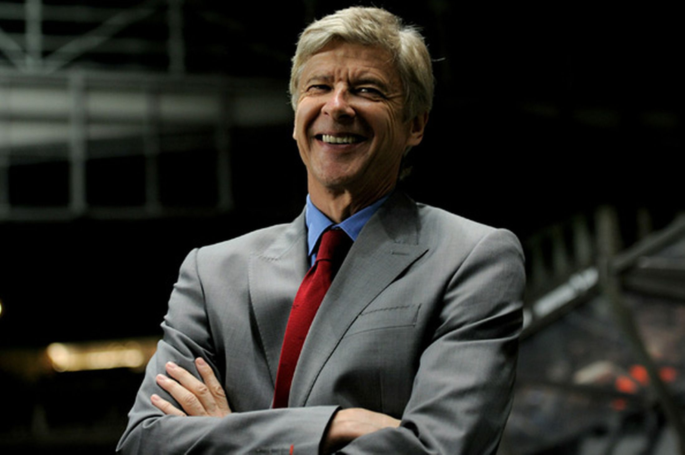

Arsene Wenger-Le Professeur
The man who created Arsenal FC

Arsene Wenger, živuća je legenda Arsenala, kluba u kojem je proveo više od 20 godina
Timeline Wengerove karijere u Arsenalu:
- 1996. - Arsene Wenger postaje trener kluba
- 1998. - Osvajanje prve titule prvaka Engleske.
- 1999. - Kupovina Thierrya Henrya
- 2004. - Osvajanje titule bez poraza, The Invincibles
- 2006. - Igranje finala Lige prvaka
- 2018. - Odlazak s klupe Arsenala nakon 22 godine.
Ako želite saznati više o ovom nogometnom genijalcu i čovjeku ispred svog vremena pročitajte njegovu biografiju ovdje